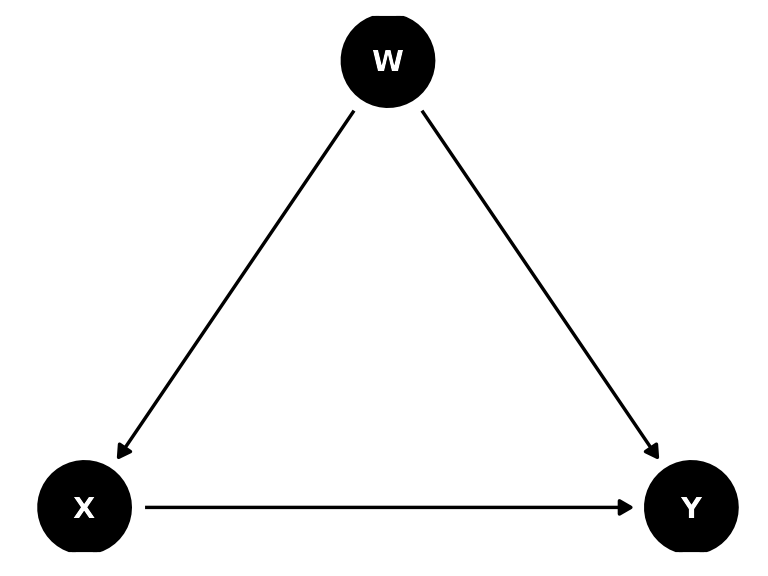

This vignette has 3 goals:
marginaleffects
marginaleffects code. This is convenient because, typically, analysts have to construct counterfactual datasets manually and must bootstrap their estimates.The “Parametric g-Formula” is often used for causal inference in observational data.
The explanations and illustrations that follow draw heavily on Chapter 13 of this excellent book (free copy available online):
Hernán MA, Robins JM (2020). Causal Inference: What If. Boca Raton: Chapman & Hall/CRC.
The parametric g-formula is a method of standardization which can be used to address confounding problems in causal inference with observational data. It relies on the same identification assumptions as Inverse Probability Weighting (IPW), but uses different modeling assumptions. Whereas IPW models the treatment equation, standardization models the mean outcome equation. As Hernán and Robins note:
“Both IP weighting and standardization are estimators of the g-formula, a general method for causal inference first described in 1986. … We say that standardization is a”plug-in g-formula estimator" because it simply replaces the conditional mean outcome in the g-formula by its estimates. When, like in Chapter 13, those estimates come from parametric models, we refer to the method as the parametric g-formula."
Imagine a causal model like this:

We want to estimate the effect of a binary treatment \(X\) on outcome \(Y\), but there is a confounding variable \(W\). We can use standardization with the parametric g-formula to handle this. Roughly speaking, the procedure is as follows:
This is equivalent to computing an “Average Contrast”, in which the value of \(X\) moves from 0 to 1. Thanks to this equivalence, we can apply the parametric g-formula method using a single line of code in marginaleffects, and obtain delta method standard errors automatically.
Let’s illustrate this method by replicating an example from Chapter 13 of Hernán and Robins. The data come from the National Health and Nutrition Examination Survey Data I Epidemiologic Follow-up Study (NHEFS). The outcome is wt82_71, a measure of weight gain. The treatment is qsmk, a binary measure of smoking cessation. There are many confounders.
Step 1 is to fit a regression model of the outcome on the treatment and control variables:
library(boot)
library(marginaleffects)
f <- wt82_71 ~ qsmk + sex + race + age + I(age * age) + factor(education) +
smokeintensity + I(smokeintensity * smokeintensity) + smokeyrs +
I(smokeyrs * smokeyrs) + factor(exercise) + factor(active) + wt71 +
I(wt71 * wt71) + I(qsmk * smokeintensity)
url <- "https://raw.githubusercontent.com/vincentarelbundock/modelarchive/main/data-raw/nhefs.csv"
nhefs <- read.csv(url)
nhefs <- na.omit(nhefs[, all.vars(f)])
fit <- glm(f, data = nhefs)Steps 2 and 3 require us to replicate the full dataset by setting the qsmk treatment to counterfactual values. We can do this automatically by calling comparisons().
These simple commands do everything we need to apply the parametric g-formula:
cmp <- comparisons(fit, variables = list(qsmk = 0:1))
summary(cmp)## Average contrasts
## Term Contrast Effect Std. Error z value Pr(>|z|) 2.5 % 97.5 %
## 1 qsmk 1 - 0 3.517 0.4403 7.989 1.3613e-15 2.654 4.38
##
## Model type: glm
## Prediction type: responseThe rest of the vignette walks through the process in a bit more detail and compares to replication code from Hernán and Robins.
We can compute average predictions in the original data, and average predictions in the two counterfactual datasets like this:
# average predicted outcome in the original data
p <- predictions(fit)
mean(p$predicted)## [1] 2.6383
# average predicted outcome in the two counterfactual datasets
p <- predictions(fit, newdata = datagrid(qsmk = 0:1, grid_type = "counterfactual"))
aggregate(predicted ~ qsmk, data = p, FUN = mean)## qsmk predicted
## 1 0 1.756213
## 2 1 5.273587In the R code that accompanies their book, Hernán and Robins compute the same quantities manually, as follows:
# create a dataset with 3 copies of each subject
nhefs$interv <- -1 # 1st copy: equal to original one
interv0 <- nhefs # 2nd copy: treatment set to 0, outcome to missing
interv0$interv <- 0
interv0$qsmk <- 0
interv0$wt82_71 <- NA
interv1 <- nhefs # 3rd copy: treatment set to 1, outcome to missing
interv1$interv <- 1
interv1$qsmk <- 1
interv1$wt82_71 <- NA
onesample <- rbind(nhefs, interv0, interv1) # combining datasets
# linear model to estimate mean outcome conditional on treatment and confounders
# parameters are estimated using original observations only (nhefs)
# parameter estimates are used to predict mean outcome for observations with
# treatment set to 0 (interv=0) and to 1 (interv=1)
std <- glm(f, data = onesample)
onesample$predicted_meanY <- predict(std, onesample)
# estimate mean outcome in each of the groups interv=0, and interv=1
# this mean outcome is a weighted average of the mean outcomes in each combination
# of values of treatment and confounders, that is, the standardized outcome
mean(onesample[which(onesample$interv == -1), ]$predicted_meanY)## [1] 2.6383## [1] 1.756213## [1] 5.273587It may be useful to note that the datagrid() function provided by marginaleffects can create counterfactual datasets automatically. This is equivalent to the onesample dataset:
Now we want to compute the treatment effect with the parametric g-formula, which is the difference in average predicted outcomes in the two counterfactual datasets. This is equivalent to taking the average contrast with the comparisons() function. There are three important things to note in the command that follows:
variables argument is used to indicate that we want to estimate a “contrast” between adjusted predictions when qsmk is equal to 1 or 0.comparisons() automatically produces estimates of uncertainty.
cmp <- comparisons(std, variables = list(qsmk = 0:1))
summary(cmp)## Average contrasts
## Term Contrast Effect Std. Error z value Pr(>|z|) 2.5 % 97.5 %
## 1 qsmk 1 - 0 3.517 0.4403 7.989 1.3613e-15 2.654 4.38
##
## Model type: glm
## Prediction type: responseUnder the hood, comparisons() did exactly what we described in the g-formula steps above:
We can obtain the same result by manually computing the quantities, using the replication code from Hernán and Robins:
mean(onesample[which(onesample$interv == 1), ]$predicted_meanY) -
mean(onesample[which(onesample$interv == 0), ]$predicted_meanY)## [1] 3.517374Although manual computation is simple, it does not provide uncertainty estimates. In contrast, comparisons() has already computed the standard error and confidence interval using the delta method.
Instead of the delta method, most analysts will rely on bootstraping. For example, the replication code from Hernán and Robins does this:
# function to calculate difference in means
standardization <- function(data, indices) {
# create a dataset with 3 copies of each subject
d <- data[indices, ] # 1st copy: equal to original one`
d$interv <- -1
d0 <- d # 2nd copy: treatment set to 0, outcome to missing
d0$interv <- 0
d0$qsmk <- 0
d0$wt82_71 <- NA
d1 <- d # 3rd copy: treatment set to 1, outcome to missing
d1$interv <- 1
d1$qsmk <- 1
d1$wt82_71 <- NA
d.onesample <- rbind(d, d0, d1) # combining datasets
# linear model to estimate mean outcome conditional on treatment and confounders
# parameters are estimated using original observations only (interv= -1)
# parameter estimates are used to predict mean outcome for observations with set
# treatment (interv=0 and interv=1)
fit <- glm(f, data = d.onesample)
d.onesample$predicted_meanY <- predict(fit, d.onesample)
# estimate mean outcome in each of the groups interv=-1, interv=0, and interv=1
return(mean(d.onesample$predicted_meanY[d.onesample$interv == 1]) -
mean(d.onesample$predicted_meanY[d.onesample$interv == 0]))
}
# bootstrap
results <- boot(data = nhefs, statistic = standardization, R = 1000)
# generating confidence intervals
se <- sd(results$t[, 1])
meant0 <- results$t0
ll <- meant0 - qnorm(0.975) * se
ul <- meant0 + qnorm(0.975) * se
bootstrap <- data.frame(
" " = "Treatment - No Treatment",
estimate = meant0,
std.error = se,
conf.low = ll,
conf.high = ul,
check.names = FALSE)
bootstrap## estimate std.error conf.low conf.high
## 1 Treatment - No Treatment 3.517374 0.4992201 2.538921 4.495828The results are close to those that we obtained with comparisons(), but the confidence interval differs slightly because of the difference between bootstraping and the delta method.
summary(cmp)## Average contrasts
## Term Contrast Effect Std. Error z value Pr(>|z|) 2.5 % 97.5 %
## 1 qsmk 1 - 0 3.517 0.4403 7.989 1.3613e-15 2.654 4.38
##
## Model type: glm
## Prediction type: response